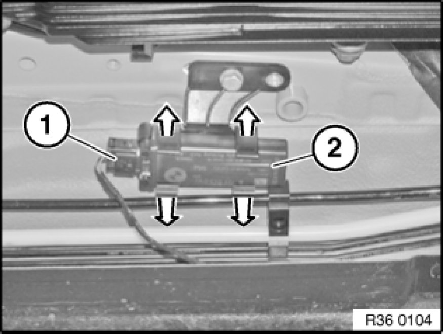

Tire Pressure Monitor Antenna: Service and Repair
36 11 115 - Removing and installing/replacing RDC receiving aerial

Necessary preliminary tasks:
- Remove rear underbody protection Removing and Installing/Replacing Rear Underbody Protection

Disconnect plug connection (1).
Gently press retaining tabs apart in direction of arrow and remove receiving aerial (2).